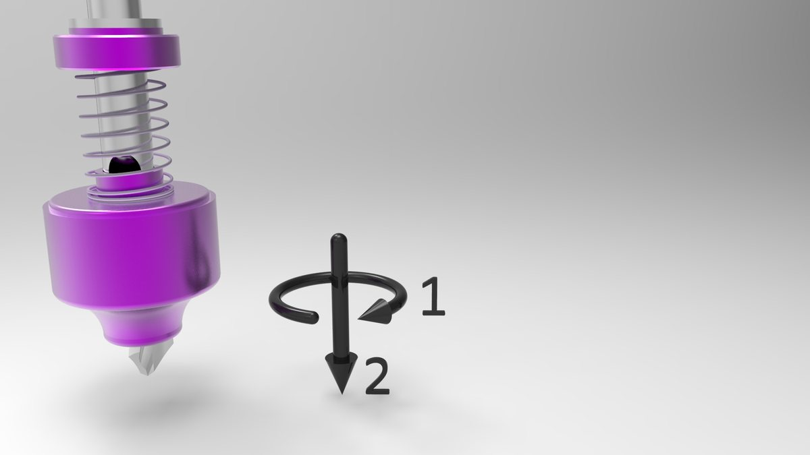
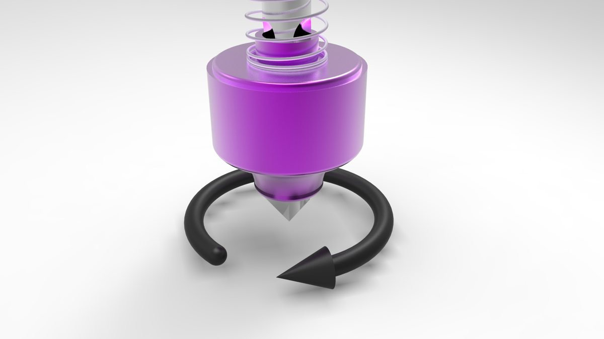
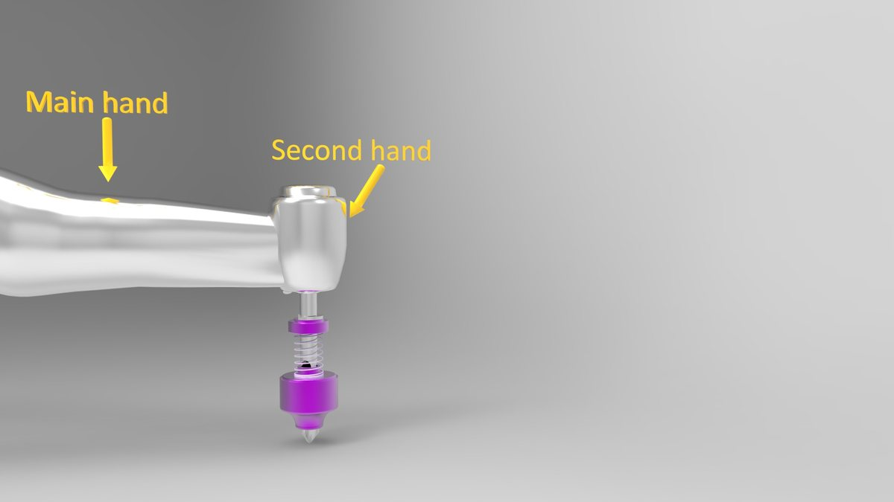
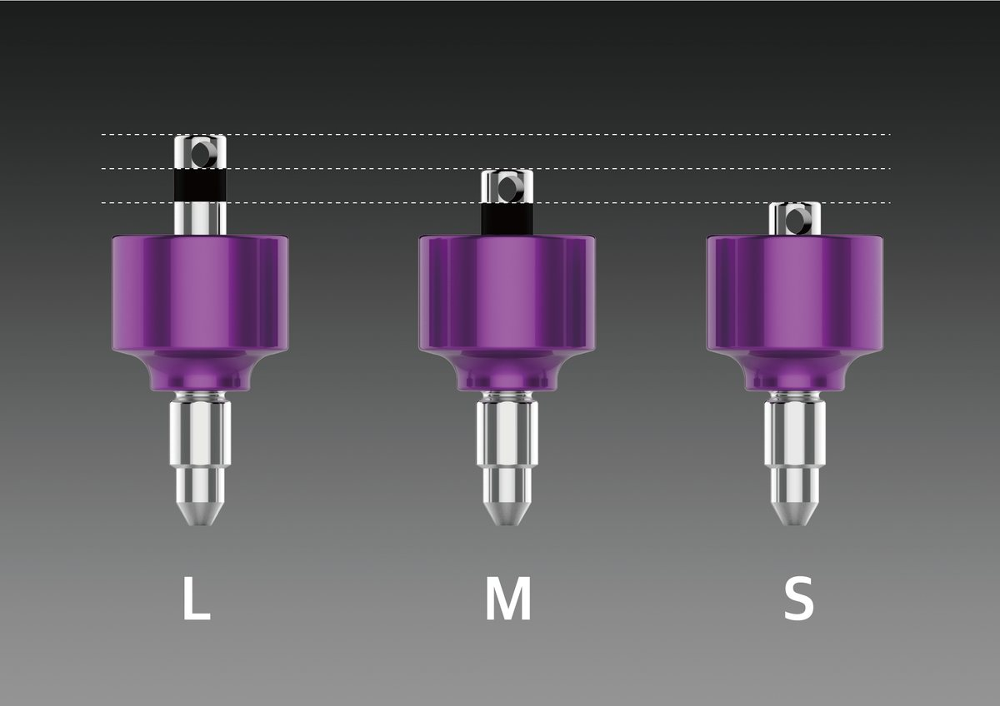

빈 자리 크기로
수술을 시작합니다.
보철이 들어갈 자리의 크기를 먼저 보고 첫 드릴링을 시작하는 방법. 3D 모형 이미지로 심플웨이 Surgical Kit의 Pen과 Cup이 하는 일을 따라갑니다.

보철을 먼저 생각하고
수술을 시작합니다.
임플란트 수술에서 보철이 들어갈 자리는 수술이 끝난 뒤에야 또렷해지기 쉽습니다. 심플웨이는 순서를 바꿉니다. 빈 자리의 근원심 크기에 맞는 Cup을 Pen에 끼우고, 그 크기를 기준으로 첫 드릴링을 시작합니다.
색은 직경입니다. 6은 노랑, 7은 초록, 8은 보라, 9는 파랑, 10은 하늘. 수술에서 고른 숫자가 힐링과 어벗까지 그대로 이어집니다.

한 자리씩,
간격을 맞춰 갑니다.


회전하고,
양손으로 잡습니다.




속도 · 주수 · 멸균,
기준대로.
- 핸드피스 20:1300~1,500 RPM · 45~55 N·cm · 주수하
- 양손 파지드릴 회전이 완전히 멈춘 뒤 이동
- 세척 · 멸균Cup과 드릴은 분리 세척, Autoclave 132°C · 15분
- 첨부문서사용 방법과 주의사항은 제품 첨부문서 기준
구성품과 인증 정보는
제품 페이지에서.
Surgical Kit는 SurgicalPen ×2 · Cup ×5 · SurgicalPin ×5 · BoneShaper ×6을 한 트레이에 담았습니다. 구성품과 식약처 신고 정보는 Surgical Kit 안내에서 확인하십시오.
이 글의 모형 이미지는 원리를 설명하기 위한 3D 렌더입니다. 실제 시술은 제품 첨부문서와 술자의 판단에 따릅니다.

이어서 읽어 보세요.

SurgicalPin으로 임플란트 식립 높이 확인하기, 눈금 3칸 | 어벗츠
심플웨이 SurgicalPin은 CheckPin과 InitialPin 역할을 겸하는 핀입니다. 눈금 3칸(각 1.5mm), 직경 6~10, 식립 전후 확인 순서를 이미지로 정리했습니다.

치과 기공 의뢰, 전화 대신 화면으로 확인하는 법 | 치과·기공소 어벗츠
치과에서 치과기공소로 보내는 기공 의뢰와 커스텀 어벗먼트 제작 의뢰를 abuts.fit 화면으로 등록하고, 준비·가공·출고·완료 단계와 송장까지 확인하는 방법을 이야기로 정리했습니다.

치과의사가 직접 만든 치과·기공소 의뢰 플랫폼, 어벗츠 이야기
치과의사이자 개발자인 이준호 원장이 진료실의 불편에서 출발해 만든 치과·치과기공소 제작 의뢰 플랫폼 어벗츠(abuts.fit). 제품과 플랫폼이 동료 치과로 이어지기까지의 이야기.